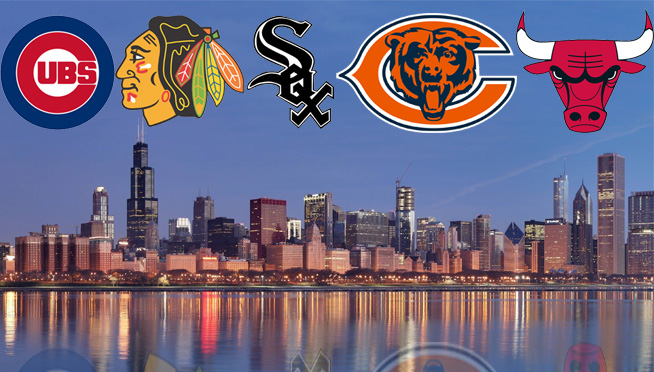

Esports
When first explaining what esports is to people the best thing is watching their reaction when you first tell them, then after you explain how much players can make. Esports has been a rapidly expanding industry for about 10 years now. Most people don't even realize how mainstream esports has become now. Not only do video games sometimes out-perform tv shows in viewers, but recently esports have even been showing on platforms like ESPN and DISNEY. The industry has been valued at around 493 million in 2017. Watch maybe soon esports will be streaming alongside major sports like NFL and MLB. My specific interests include Overwatch and Call of Duty.
Here is a great video by Complex explaining esports and the popularity:
Computers
As I mentioned in my about me I have built my own PC. I like to compare my interests of computer to that of a carpenter. I love working with the hardware and components inside of a computer. There is something I find fun about taking a computer apart and either upgrading it or putting it back together. I sort of went into my first build really not knowing much and ended up learning a lot. Another awesome thing is that the industry is always evolving and developing so there is always something new to discover.
I love this subreddit and it is a great representation of how much goes on in the hardware department of computers: Hardware Subreddit
Sports
My interest in sports is probably my biggest one. I love all kinds of sports from football to hockey. I am a big Chicago sports guy (unless it's the Cubs). All my favorite teams are Chicago ones, Blackhaws, White Sox, and Bears. I think sports is an amazing way to stay in shape, as well as have a great time with friends. Sports are probably the one of the biggest things I can point to in my life that has impacted who I am and has instilled many values in me. Most of the time I would prefer to watch college sports over pro, but I will watch just about any sport. Although I am not a huge basketball guy unless it is March Madness.
